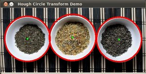

Hough Circle Transform
Goal
In this tutorial you will learn how to:
- Use the OpenCV function cv::HoughCircles to detect circles in an image.
Theory
Hough Circle Transform
The Hough Circle Transform works in a roughly analogous way to the Hough Line Transform explained in the previous tutorial.
In the line detection case, a line was defined by two parameters \((r, \theta)\). In the circle case, we need three parameters to define a circle:
\[C : ( x_{center}, y_{center}, r )\]where \((x_{center}, y_{center})\) define the center position (green point) and \(r\) is the radius, which allows us to completely define a circle, as it can be seen below:

For sake of efficiency, OpenCV implements a detection method slightly trickier than the standard Hough Transform: The Hough gradient method, which is made up of two main stages. The first stage involves edge detection and finding the possible circle centers and the second stage finds the best radius for each candidate center. For more details, please check the book Learning OpenCV or your favorite Computer Vision bibliography
Code
What does this program do?
- Loads an image and blur it to reduce the noise
- Applies the Hough Circle Transform to the blurred image .
- Display the detected circle in a window.
The sample code that we will explain can be downloaded from here. A slightly fancier version (which shows trackbars for changing the threshold values) can be found here.
#include "opencv2/imgcodecs.hpp" #include "opencv2/highgui.hpp" #include "opencv2/imgproc.hpp" #include <iostream> using namespace cv; using namespace std; static void help() { cout << "\nThis program demonstrates circle finding with the Hough transform.\n" "Usage:\n" "./houghcircles <image_name>, Default is ../data/board.jpg\n" << endl; } int main(int argc, char** argv) { cv::CommandLineParser parser(argc, argv, "{help h ||}{@image|../data/board.jpg|}" ); if (parser.has("help")) { help(); return 0; } string filename = parser.get<string>("@image"); Mat img = imread(filename, IMREAD_COLOR); if(img.empty()) { help(); cout << "can not open " << filename << endl; return -1; } Mat gray; cvtColor(img, gray, COLOR_BGR2GRAY); medianBlur(gray, gray, 5); vector<Vec3f> circles; HoughCircles(gray, circles, HOUGH_GRADIENT, 1, gray.rows/16, // change this value to detect circles with different distances to each other 100, 30, 1, 30 // change the last two parameters // (min_radius & max_radius) to detect larger circles ); for( size_t i = 0; i < circles.size(); i++ ) { Vec3i c = circles[i]; circle( img, Point(c[0], c[1]), c[2], Scalar(0,0,255), 3, LINE_AA); circle( img, Point(c[0], c[1]), 2, Scalar(0,255,0), 3, LINE_AA); } imshow("detected circles", img); waitKey(); return 0; }
Explanation
Load an image
string filename = parser.get<string>("@image"); Mat img = imread(filename, IMREAD_COLOR); if(img.empty()) { help(); cout << "can not open " << filename << endl; return -1; }
Convert it to grayscale:
Mat gray; cvtColor(img, gray, COLOR_BGR2GRAY);
Apply a Median blur to reduce noise and avoid false circle detection:
medianBlur(gray, gray, 5);
Proceed to apply Hough Circle Transform:
vector<Vec3f> circles; HoughCircles(gray, circles, HOUGH_GRADIENT, 1, gray.rows/16, // change this value to detect circles with different distances to each other 100, 30, 1, 30 // change the last two parameters // (min_radius & max_radius) to detect larger circles );
with the arguments:
- gray : Input image (grayscale).
- circles : A vector that stores sets of 3 values: \(x_{c}, y_{c}, r\) for each detected circle.
- HOUGH_GRADIENT : Define the detection method. Currently this is the only one available in OpenCV.
- dp = 1 : The inverse ratio of resolution.
- min_dist = gray.rows/16 : Minimum distance between detected centers.
- param_1 = 200 : Upper threshold for the internal Canny edge detector.
- param_2 = 100*: Threshold for center detection.
- min_radius = 0 : Minimum radius to be detected. If unknown, put zero as default.
- max_radius = 0 : Maximum radius to be detected. If unknown, put zero as default.
Draw the detected circles:
for( size_t i = 0; i < circles.size(); i++ ) { Vec3i c = circles[i]; circle( img, Point(c[0], c[1]), c[2], Scalar(0,0,255), 3, LINE_AA); circle( img, Point(c[0], c[1]), 2, Scalar(0,255,0), 3, LINE_AA); }
You can see that we will draw the circle(s) on red and the center(s) with a small green dot
Display the detected circle(s) and wait for the user to exit the program:
imshow("detected circles", img); waitKey();
Result
The result of running the code above with a test image is shown below:
